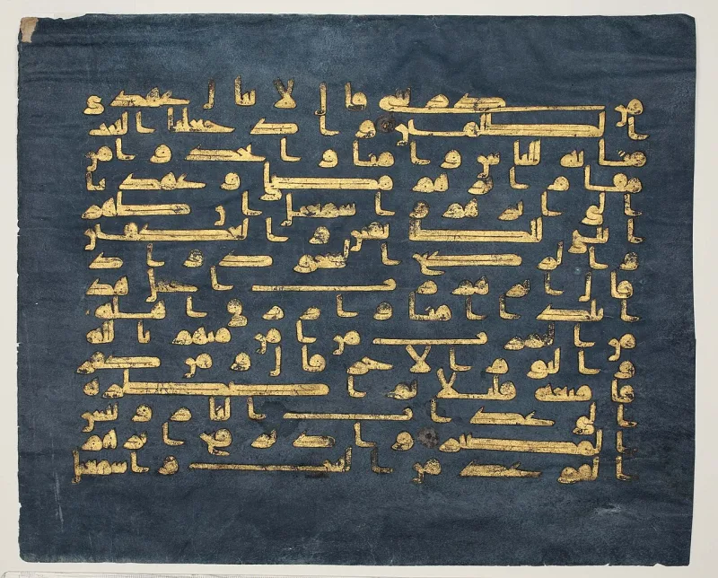
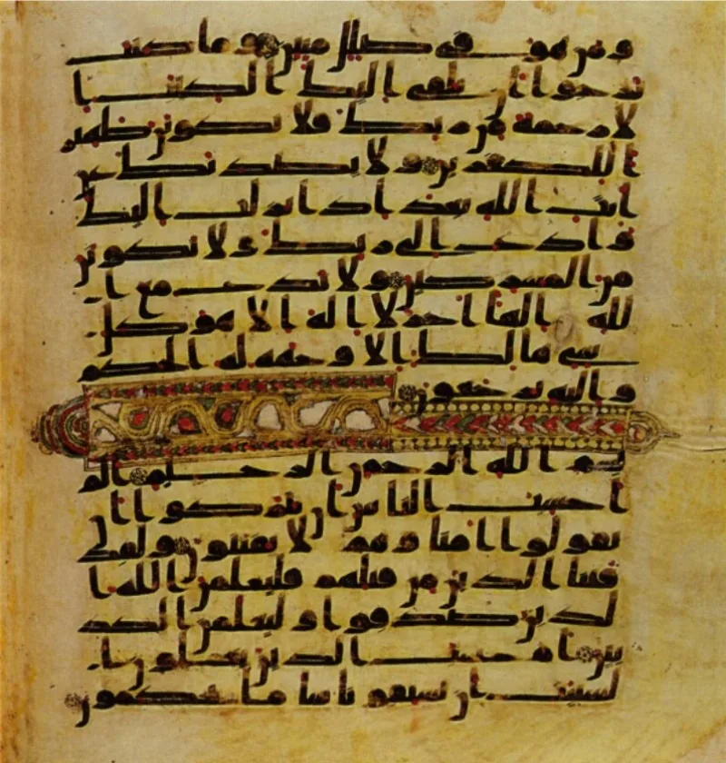
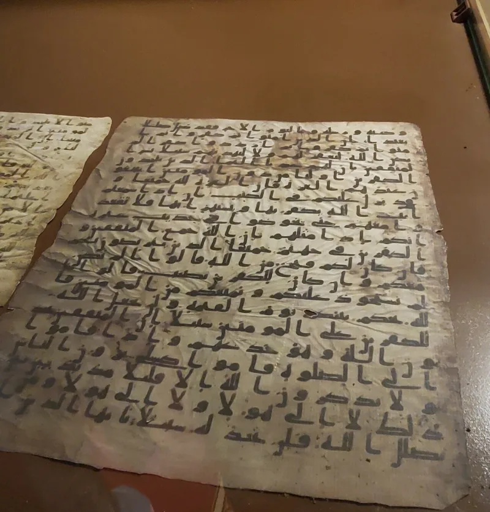

Muslim scholars have a real answer here. Say so before your friend does.
Its great miracle is its language. "Produce a surah like it" (Quran 2:23).
It calls itself clear Arabic (12:2).
Arabic marks case with word endings. In four places the endings do not follow the rule.
Quran 4:162 has al-muqimina in one case while the nouns around it are in another. Quran 5:69 has al-sabi'una in a form the word inna should not allow.
Compare 2:62 and 22:17, where the same word follows the rule. Quran 20:63 reads inna hadhani la-sahirani, where inna calls for hadhayni.
Quran 2:177 does the same with al-sabirina.
Uthman is said to have looked at the text and said: "I see errors (lahn) in it, and the Arabs will correct them with their tongues." A report in Abu Ubayd's Fada'il al-Qur'an has Aisha say that 4:162, 5:69 and 20:63 are the fault of the scribes. Both reports have weak chains.
Muslim scholars reject them or read them another way.
Islamic Awareness says these are known forms, not errors. The odd ending in 4:162 and 2:177 is the qat' form, used for praise.
It turns up in old Arab poetry. The one in 5:69 can be a late topic.
The hadhani of 20:63 fits the speech of some tribes, said to be Banu al-Harith, who kept the same form in every case. Early word scholars knew that.
As for the two reports, the chains are weak. Lahn may mean a way of reading, not a fault.
And it is odd to think Uthman would fix a text he judged broken. Grammar books came after the Quran, and partly from it.
Genuinely arguable, and use it rarely. Several of these forms do have real parallels.
This site will not lean on reports it would reject if they helped Islam. What is left is smaller.
A book whose miracle is perfect speech needed centuries of case-by-case repair. And the first Muslims passed on reports of scribal error.
Note the difference in claims. We claim God-breathed meaning through human writers (Luke 1:1-4), not dictated perfect speech.
Use this only with someone who cares about i'jaz. To anyone else it looks like nit-picking.
"The i'jaz argument matters to you. May I ask how you read Quran 5:69?"



They say these are known Arabic forms, and the two reports have weak chains.
Muslim grammarians and modern academics, including Islamic Awareness, answer that these are attested classical Arabic. They are not errors. The form in 4:162 and 2:177 is the well-known qat' construction, used for praise. It means and especially those who, and it appears in pre-Islamic poetry. The form in 5:69 can be a delayed topic. And the hadhani of 20:63 matches the speech of certain Arab tribes, said to be Banu al-Harith, who keep the same dual form in every case. The earliest word scholars knew that reading.
The Uthman and Aisha reports, they argue, are unreliable. Their chains are contested. Lahn in early usage could mean a style of reciting rather than an error. And it is hard to believe Uthman would standardise a text he thought faulty, while companions who had memorised it raised no objection. Grammar books were written after the Quran, and partly from it.
Both sides have a case, and use it rarely: it can look like fault-finding.
This is graded contested because the Muslim defences have real substance. Several forms do have parallels in old poetry and tribal speech. Grammar books came after the Quran. And the Uthman and Aisha reports carry disputed chains. This site will not lean on reports it would reject if they favoured Islam.
What survives is narrower but still notable. A book whose signature miracle is perfect language holds a handful of forms that needed generations of repair, appeals to dialect, and case-by-case pleading. And the earliest Muslims passed on reports alleging scribal error. That is not what a community sure of perfect wording tends to keep.
Use this only with someone who cares about the i'jaz claim, that the Quran's language cannot be matched. It carries no weight with an ordinary Muslim friend, and it can look like nit-picking. Note too that Christianity claims God-breathed meaning through human authors (Luke 1:1-4), not dictated perfection of wording. The comparison of claims is the real point.